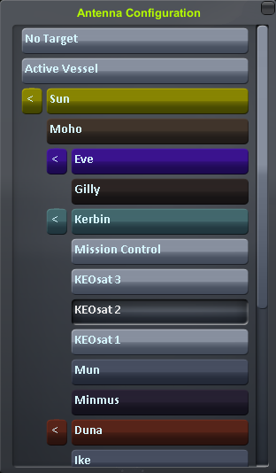
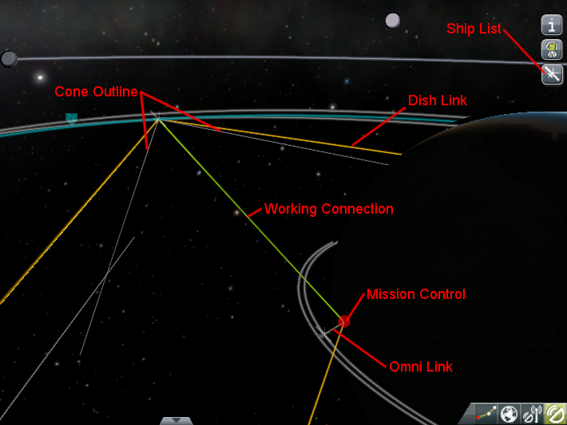

"beep... beep... beep... beep..." - Leonard Nimoy
Oh shit son! This page is still under development!
Playing RemoteTech
To play RemoteTech, you must not only manage the antennas on your current ship, selecting the right antenna(s) for the right situation, but you must also manage your overall communications network, ensuring that every craft has a link to Mission Control when it needs it.
Antenna Configuration
With the exception of the Reflectron DP-10, all antennas start deactivated, both to save power and to protect the more delicate antennas from the rigors of launch. To activate an antenna (or to deactivate an unneeded one), right click on the antenna, then click “Activate” (or “Deactivate”). Antennas can also be activated or deactivated using action groups, or preset by right-clicking on them in the VAB. Activating an antenna counts as a command: you cannot activate an antenna unless you have an on-board crew, a working connection through another antenna, or an attached launch clamp. Deactivate your last antenna at your peril!
Omnidirectional antennas will automatically connect to any antenna they can as soon as they are activated. Dish antennas must also be given a target. Targets may be selected before or after the dish is activated. To set a target, right-click on the antenna and click the button marked “Target: None”. This will pull up a window listing all planets and moons, as well as everything around them with an antenna. You may select a planet or moon to use Cone Mode, a ship or “Mission Control” for a Direct Link, or Active Vessel to always target the ship you are flying. To create a link, the other ship may need to target your ship as well. 
You do not need to place your satellite in any special orientation to use a dish antenna. As long as the targets are set correctly, the dish will connect, even if it is “really” facing the other way!
If necessary, you can send an EVA to open, close, or retarget an antenna from the outside. This is usually the only way to restore contact with a probe whose antennas are all shut down. Simply float up to the antenna, right click on it, and select the command you want to force.
The Map View
RemoteTech adds an overlay to the map view to display the state of your communication network. The overlay may be toggled with the bottons located on the lower right:

- This button will highlight the links used in the working connection (if any) as a green line.

- This button will display a 2D outline of any cones being aimed at planets or moons. For clarity, cones from ships off the edge of the screen will not be shown.

- This button cycles through four views of the network: no overlay, all omni-to-omni links in light brown, all dish-to-dish or omni-to-dish links in orange, and all links.

- This button pulls up a window listing all dishes on the current craft, as well as their targets. Dishes marked in green are activated, those marked in red are deactivated. Clicking on any dish in the list will pull up the target selection window for that dish.

The Kerbal Space Center and any remote command stations will be marked on the map with red dots. This overlay cannot be toggled.
RemoteTech also adds one button to the right side of the map view, below the planet info/ship crew button. Clicking this button will open a list of loaded ships; clicking on any ship on the list will center the map view on that ship.
Connection Rules
To have a working connection to the Kerbal Space Center (KSC) or a remote command station, there must be an unbroken chain of links between satellites and between a satellite and the command center. If multiple paths through the network are available, RemoteTech will always choose the shortest, minimizing signal delay. There is no limit to the number of links in the chain, but all links must be valid to establish a connection. An example with three links is shown below.


Example: this probe in low Munar orbit can’t link to the Kerbal Space Center (KSC) because the probe is on the far side of the Mun. However, it can link to a relay satellite in polar orbit. The relay can’t link to KSC, either, because KSC is on the other side of the planet. However, it can link to any of several communications satellites orbiting Kerbin (for clarity, only the best connection is shown). One of these satellites can link to KSC. Therefore, the probe has a working connection with KSC, as relayed by the two intermediate satellites, even though there are nearly 1600 km of solid rock blocking a direct transmission.
A link will be formed between two satellites if, and only if, three conditions are met. For the purposes of these rules, Mission Control at the Kerbal Space Center (KSC) is considered a grounded satellite with a special omnidirectional antenna.
Line of Sight
The first condition is that there must not be a planet or moon blocking the line of sight between the two satellites. Line of sight calculations assume all planets are perfect spheres, so mountains and other terrain will not affect line of sight.
Range
The second condition is that both satellites must have an antenna that can reach as far as the other satellite. A special case is that a link to KSC is impossible unless the satellite establishing the link is within 75,000 km of Kerbin. Any connections from farther out will need to go through at least one relay.
Example: a probe with a Communotron 16 antenna (range 2500 km) and a probe with a CommTech-1 dish (350,000,000 km) are located 3000 km apart. Although the CommTech-1 is one of the most powerful dishes in RemoteTech, the two probes cannot link because the first probe can never link to anything more than 2500 km away – unless, of course, it has a longer-range antenna in addition to the Communotron 16.
Targeting
The third, and most complex, condition applies only to dish antennas. To establish a link, a dish with sufficient range must be targeted at the other satellite, either directly or indirectly. If the other satellite is also trying to connect through a dish rather than an omnidirectional antenna, it must target the first satellite as well. There are three ways to target a satellite:
- Direct Link
- if the dish’s target is set to a specific satellite, or to KSC Mission Control, it will maintain a link to that target as long as the line of sight and range conditions are met. A dish in Direct Link mode cannot be used to make connections with anything other than its specific target. Direct link mode is recommended for situations where the other two modes won’t work, because updating direct links as ships move around can be a lot of work.
- Cone
- if the dish’s target is set to a planet or moon, it can simultaneously maintain a link to all targets that are within a cone centered on that planet and that are within that planet or moon’s sphere of influence. The list of parts includes the cone diameter for each dish, as well as the minimum distance the dish needs to be from Kerbin to see anything to the side of the planet or to see anything in synchronous orbit (if you’re too close, you’ll get the situation in the picture). Cone mode is recommended for links to relay satellites orbiting another planet or moon, as it will automatically choose the best relay at any moment.

- Active Vessel
- if the dish’s target is set to “Active Vessel”, it will attempt to contact the ship the player is currently flying as if that ship had been selected using Direct Link. Active Vessel targeting is meant for dedicated communications satellites or remote command stations, where it prevents the player from having to manually re-target all their comsats every time they focus on a different mission. Active Vessel is best suited for contacting isolated ships where there is not enough demand for a dedicated link. It should not be used if the player wants to relay a transmission through a third ship, or you may run into the common situation below:

Example: a mothership is in orbit around a planet and has just detached a lander. Both mothership and lander are equipped with omnidirectional antennas; the mothership also has a dish that is pointed at Kerbin in cone mode. In orbit around Kerbin is a comsat with one of its dishes set to Active Vessel. If the player is controlling the lander, the comsat tries to link directly to it, bypassing the mothership entirely. The lander’s antenna is too short to link to the comsat, and the mothership can’t link because the comsat isn’t trying to link to the mothership. To establish a connection, the comsat needs to either target the mothership with a direct link, or target the planet with a cone. Either would create a link between comsat and mothership, letting the mothership act as a relay for the lander.